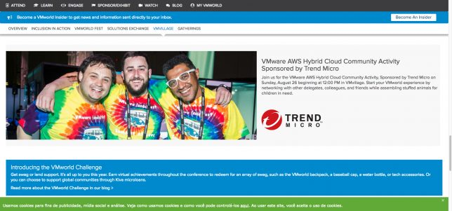

VMworld 2018 - Minhas sessões
Blog Eventos VMworld 2018Compartilhe esse post nas redes sociais...
Olá Homelabers!
Estamos há pouco mais de 2 semanas do início da VMworld US 2018 e arrisco dizer que estou mais empolgado e ansioso do que das últimas duas vezes que participei do evento. Nesse post, vou falar sobre as minhas sessões na VMworld US 2018.
Em 2016 foi a minha primeira vez, tudo era novidade, tudo era desconhecido para mim, então o que acontecesse seria lucro.
Em 2017, eu já estava mais à vontade, já sabia o que fazer, já conhecia muitas pessoas e tive a oportunidade de ir com mais 3 amigos do Brasil. A experiência foi totalmente diferente.
Esse ano, vai ser tudo diferente para mim. Será a primeira vez que irei participar da VMworld como funcionário VMware. Tive a chance de acompanhar muitas atividades nos bastidores - e vocês não tem idéia do trabalho que é organizar um evento desse porte, o número de pessoas que são mobilizadas, para que tudo saia conforme planejado. Só no meu time de Digital Marketing, são mais de 10 pessoas, trabalhando praticamente full time só focando na VMworld.
Mas vamos ao que interessa, quero compartilhar com vocês, minhas sessões desse ano.
Sessões:
First Months of vBrownBagBrasil [VMTN5514U]
Toda a equipe do vBrownbag Brasil estará presente no evento esse ano. Já temos agendado uma sessão para falar sobre o vBrownBag no Brasil. Vamos contar para todos como e porque começamos o vBB no Brasil, nossas dificuldades e tentar passar esse bug de comunidades para frente. A sessão será transmitida ao vivo na quarta-feira, 29/08 às 15:30 - 16:00 (horário de Brasília) - 11:30 a.m. - 12:00 p.m - no canal do vBrownBag US no Youtube. Se você estiver na VMworld, o link para se registrar na sessão é esse First Months of vBrownBagBrasil [VMTN5514U]
The VMware vExpert Program - All you need to know [VMTN5616U]
Eu também estarei palestrando ao vivo durante os 3 dias do evento, falando sobre o programa VMware vExpert.
Segunda-Feira, 27/08, 11:00 a.m. - 11:30 a.m. - 15:00 - 15:30 (horário de Brasília) Terça-Feira, 28/08, 11:00 a.m. - 11:30 a.m. - 15:00 - 15:30 (horário de Brasília) Quarta-Feira, 29/08, 11:00 a.m. - 11:30 a.m. - 15:00 - 15:30 (horário de Brasília)
Link para se registrar na minha apresentação The VMware vExpert Program - All you need to know [VMTN5616U]
Painel sobre Homelabs - VMUG Lounge
E para finalizar, irei participar de um painel sobre Homelabs no VMUG Lounge junto com a Lindy (@indylindy22) no dia 28/08 às 02:00pm.
Estou super feliz por participar mais uma vez da VMworld e a cada ano, conquistar o meu espaço na comunidade. Se você estiver lendo esse post e vai estar em Vegas, deixe um comentário, quero muito te conhecer pessoalmente!
Mãe, eu estou no site da VMworld

Até o próximo post
Compartilhe esse post nas redes sociais...Valdecir Carvalho
Nerd e pai orgulhoso da Mariana e João. Profissional Sênior de TI com foco em arquitetura de infraestrutura e cloud computing. Blogueiro, podcaster, palestrante, amante de comunidades técnicas, fotógrafo aposentado e adora jogos antigos.
#vExpert · #VMUGLeader · #VUGBrasil · #vBronwBagBrasil · #VeeamVanguard